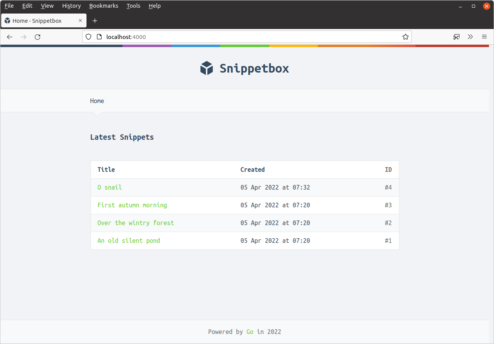
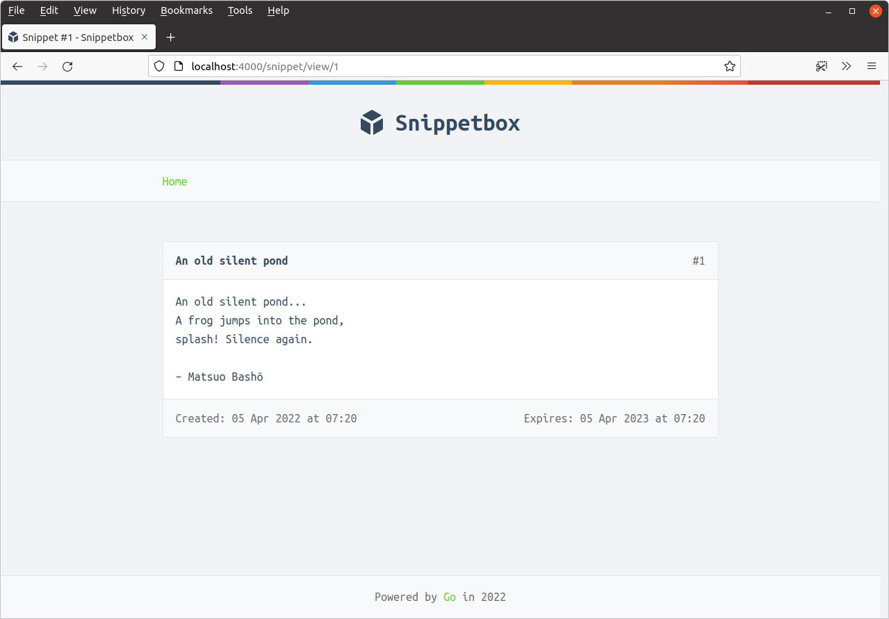

توابع سفارشی قالب
در آخرین بخش از این مبحث درباره قالبها و دادههای پویا، میخواهم توضیح دهم که چگونه میتوانید توابع سفارشی خود را برای استفاده در قالبهای Go ایجاد کنید.
برای نشان دادن این موضوع، بیایید یک تابع سفارشی humanDate() ایجاد کنیم که تاریخها را در فرمت زیبای "انسانی" مانند 1 Jan 2024 at 10:47 یا 18 Mar 2024 at 15:04 نمایش دهد، به جای نمایش تاریخها در فرمت پیشفرض YYYY-MM-DD HH:MM:SS +0000 UTC که در حال حاضر استفاده میکنیم.
برای انجام این کار دو مرحله اصلی وجود دارد:
ما نیاز داریم یک شیء
template.FuncMapحاوی تابع سفارشیhumanDate()ایجاد کنیم.ما باید از متد
template.Funcs()برای ثبت این تابع قبل از تجزیه قالبها استفاده کنیم.
حالا کد زیر را به فایل templates.go خود اضافه کنید:
package main import ( "html/template" "path/filepath" "time" // New import "snippetbox.alexedwards.net/internal/models" ) ... // Create a humanDate function which returns a nicely formatted string // representation of a time.Time object. func humanDate(t time.Time) string { return t.Format("02 Jan 2006 at 15:04") } // Initialize a template.FuncMap object and store it in a global variable. This is // essentially a string-keyed map which acts as a lookup between the names of our // custom template functions and the functions themselves. var functions = template.FuncMap{ "humanDate": humanDate, } func newTemplateCache() (map[string]*template.Template, error) { cache := map[string]*template.Template{} pages, err := filepath.Glob("./ui/html/pages/*.tmpl") if err != nil { return nil, err } for _, page := range pages { name := filepath.Base(page) // The template.FuncMap must be registered with the template set before you // call the ParseFiles() method. This means we have to use template.New() to // create an empty template set, use the Funcs() method to register the // template.FuncMap, and then parse the file as normal. ts, err := template.New(name).Funcs(functions).ParseFiles("./ui/html/base.tmpl") if err != nil { return nil, err } ts, err = ts.ParseGlob("./ui/html/partials/*.tmpl") if err != nil { return nil, err } ts, err = ts.ParseFiles(page) if err != nil { return nil, err } cache[name] = ts } return cache, nil }
قبل از ادامه، باید توضیح دهم: توابع سفارشی قالب (مانند تابع humanDate() ما) میتوانند به تعداد دلخواه پارامتر دریافت کنند، اما باید فقط یک مقدار برگردانند. تنها استثنا در این مورد زمانی است که میخواهید یک خطا را به عنوان مقدار دوم برگردانید، که در این صورت مشکلی نیست.
حالا میتوانیم از تابع humanDate() خود به همان روش توابع داخلی قالب استفاده کنیم:
{{define "title"}}Home{{end}}
{{define "main"}}
<h2>Latest Snippets</h2>
{{if .Snippets}}
<table>
<tr>
<th>Title</th>
<th>Created</th>
<th>ID</th>
</tr>
{{range .Snippets}}
<tr>
<td><a href='/snippet/view/{{.ID}}'>{{.Title}}</a></td>
<!-- Use the new template function here -->
<td>{{humanDate .Created}}</td>
<td>#{{.ID}}</td>
</tr>
{{end}}
</table>
{{else}}
<p>There's nothing to see here... yet!</p>
{{end}}
{{end}}
{{define "title"}}Snippet #{{.Snippet.ID}}{{end}}
{{define "main"}}
{{with .Snippet}}
<div class='snippet'>
<div class='metadata'>
<strong>{{.Title}}</strong>
<span>#{{.ID}}</span>
</div>
<pre><code>{{.Content}}</code></pre>
<div class='metadata'>
<!-- Use the new template function here -->
<time>Created: {{humanDate .Created}}</time>
<time>Expires: {{humanDate .Expires}}</time>
</div>
</div>
{{end}}
{{end}}
پس از انجام این تغییرات، برنامه را مجدداً راهاندازی کنید. اگر به http://localhost:4000 و http://localhost:4000/snippet/view/1 در مرورگر خود مراجعه کنید، باید تاریخهای جدید و زیبا را مشاهده کنید.


اطلاعات تکمیلی
خط لولهسازی
در کد بالا، ما تابع سفارشی قالب خود را به این صورت فراخوانی کردیم:
<time>Created: {{humanDate .Created}}</time>
یک روش جایگزین استفاده از کاراکتر | برای خط لولهسازی مقادیر به یک تابع است. این کار کمی شبیه به خط لولهسازی خروجیها از یک دستور به دستور دیگر در ترمینالهای یونیکس است. میتوانیم کد بالا را به این صورت بازنویسی کنیم:
<time>{{.Created | humanDate}}</time>
یکی از ویژگیهای خوب خط لولهسازی این است که میتوانید زنجیرهای به طول دلخواه از توابع قالب ایجاد کنید که خروجی یکی را به عنوان ورودی دیگری استفاده میکنند. برای مثال، میتوانیم خروجی تابع humanDate را به تابع داخلی printf خط لوله کنیم:
<time>{{.Created | humanDate | printf "Created: %s"}}</time>